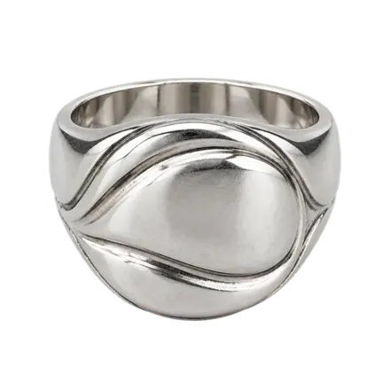

A
Ruhige Liste
Am nächsten an heute, nur aufgeräumt. Eine Spalte, Haarlinien statt Karten, iOS-typische Gruppe für die Bild-Optionen.
Cream Sherpa Jacket & Silver Signet Ring
Grau
Beige
Weiß
Teile2
- Cream Sherpa JacketAuf dem Foto markiert
-

Silver Signet RingVon dir hinzugefügt
Bild zu diesem Look
Was wegfällt
- Erklärtext unter „Auf diesem Foto“
- Untersektion „Ohne Markierung“, der Ring steht einfach in der Liste
- Großer „Zur Sammlung“-Button, wird zum Herz neben dem Namen
Abwägung
Geringster Umbau, vertraut. Das Herz ohne Label ist weniger auffindbar als heute. Offene Fragen („Ist das dein …?“) würden als eigene Zeile oben in „Teile“ stehen.